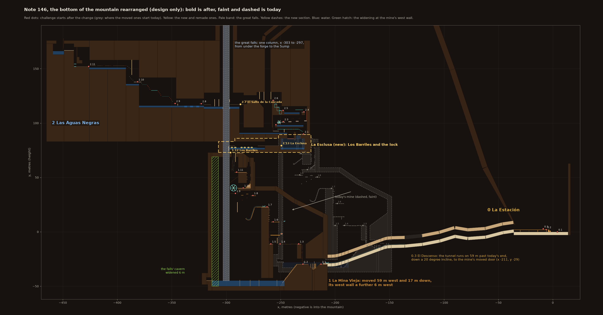
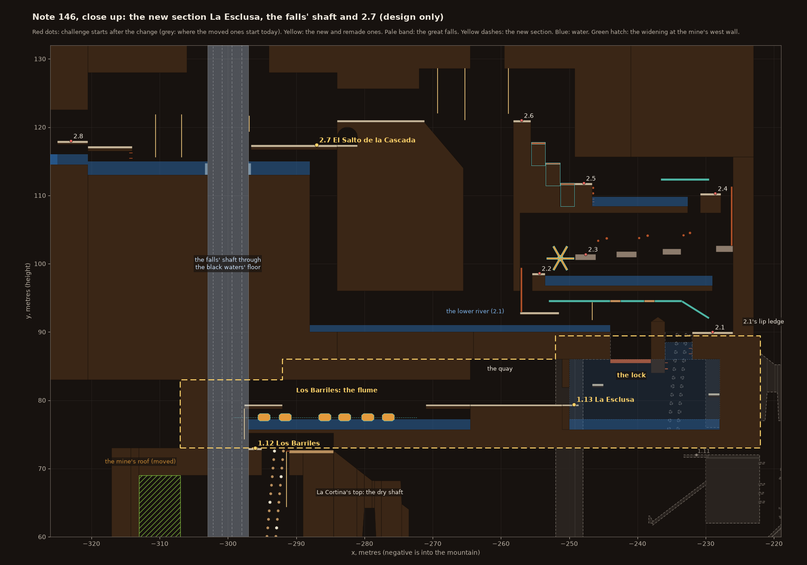

Note 146 in the playtest notes · Area and background design
Note 146: the bottom of the mountain rearranged
Design pages only. Nothing in the game changes. Drawn from the course files as they are today; every number not marked "as today" is a first guess.
The great falls now run to the bottom. The mine moves 59 m west and 17 m down, so its waterfall cavern stands under the well, and its west wall a further 6 m west so the falls have room. The cart ride runs 59 m further, down a steep incline, to the mine's moved door. Between the mine's top and the black waters, under their east end, a new section, La Esclusa: Los Barriles, the barrels' flume with the barrels running west into the falls, and La Esclusa, a lock that floats you up to El Borde. Where the barrels were, 2.7 becomes El Salto de la Cascada, a leap over the falling water into the pool that feeds them.
The map


The layout's key numbers
| The mine's shift | 59 m west and 17 m down (the falls' slot moves from x -244 to -238 to x -303 to -297, centred on the well's middle, x -300) |
| The widening | the mine's west wall and frog's cave a further 6 m west (Parker's drawing: 6.6 m) |
| The mine after | x -322.4 to -207, y -54 to 73 (today x -257.4 to -148, y -37 to 90) |
| The cart ride | 203 m of road (today 141 m); its end moves from (-148.4, -11.55) to (-207.4, -28.55); the mine's door to x -211, floor -29.6; a 20 degree incline from x -158 to -188 |
| The great falls | one column, x -303 to -297, down the well (note 147 starts them at the glacier above) through the Charco, the black waters' floor, the new section and the mine to the Sump at y -45; a fall into them is a ride to the Sump (note 147) |
| The new section, La Esclusa | x -303 to -222, y 73 to 90: the lip room y 73 to 75.2, the flume's water x -297 to -264.5, y 75.7 to 77.2, landings and quay at 79.4, the lock x -250 to -228, y 75.7 to 86 and up the dry shaft to 88.5 |
| The barrels | as today: eight, 0.55 m a second, the same gaps, 26.8 m of road, now from x -272.4 west to the lip at x -297 |
| The lock | 11.3 m in 6 s, held 3 s, drained in 5 s, 4 s at the bottom (added): 18 s |
| 2.7's leap | over the falls (6 m) from a chain at x -296.9 to the pool beyond: 6.7 to 9.1 m, 4.4 m down |
Where each challenge now starts
| Challenge | Today | After | ||
|---|---|---|---|---|
| 0.1 | El Primer Paso | x 4.0, y 0.00 | x 4.0, y 0.00 | unchanged |
| 0.2 | Súbete | x -6.2, y 2.20 | x -6.2, y 2.20 | unchanged |
| 0.3 | El Descenso | x -9.0, y 2.90 | x -9.0, y 2.90 | same start; the ride is 62 m longer and stops at the mine's moved door |
| 1.1 | La Galería | x -154.0, y -12.60 | x -213.0, y -29.60 | moved with the mine |
| 1.2 | Escalera Rota | x -170.6, y -12.60 | x -229.6, y -29.60 | moved with the mine |
| 1.3 | Los Tablones | x -174.5, y 6.00 | x -233.5, y -11.00 | moved with the mine |
| 1.4 | La Cuerda del Minero | x -191.5, y 6.00 | x -250.5, y -11.00 | moved with the mine |
| 1.5 | El Cubo | x -200.0, y 6.00 | x -259.0, y -11.00 | moved with the mine |
| 1.6 | Vetas de Lodo | x -198.0, y 26.20 | x -257.0, y 9.20 | moved with the mine |
| 1.7 | El Carrito Loco | x -203.6, y 40.00 | x -262.6, y 23.00 | moved with the mine |
| 1.8 | Las Vigas | x -216.5, y 50.50 | x -275.5, y 33.50 | moved with the mine |
| 1.9 | La Polea Grande | x -232.6, y 52.45 | x -291.6, y 35.45 | moved with the mine |
| 1.10 | El Derrumbe | x -225.5, y 57.40 | x -284.5, y 40.40 | moved with the mine |
| 1.11 | La Cortina | x -231.4, y 72.00 | x -290.4, y 55.00 | moved with the mine |
| 1.12 | Los Barriles (working number) | new | x -296.0, y 73.00 | new: on the pier's top under the flume's lip |
| 1.13 | La Esclusa (working number) | new | x -249.3, y 79.40 | new: on the wicket's sill inside the lock's lower gate |
| 2.1 | El Borde | x -229.0, y 90.00 | x -229.0, y 90.00 | unchanged |
| 2.2 | La Rueda | x -254.4, y 98.60 | x -254.4, y 98.60 | unchanged |
| 2.3 | El Acueducto | x -247.6, y 101.40 | x -247.6, y 101.40 | unchanged |
| 2.4 | Brazo de Molino | x -228.6, y 110.30 | x -228.6, y 110.30 | unchanged |
| 2.5 | Las Compuertas | x -247.9, y 111.80 | x -247.9, y 111.80 | unchanged |
| 2.6 | Cadenas | x -257.0, y 121.00 | x -257.0, y 121.00 | unchanged |
| 2.7 | El Salto de la Cascada (was El Charco del Pozo) | x -287.0, y 117.40 | x -287.0, y 117.40 | same start on Q6; the launch is Q6's new west end, x -296.6 |
| 2.8 | Contracorriente | x -323.0, y 118.00 | x -323.0, y 118.00 | unchanged |
| 2.9 | Tubería | x -347.0, y 118.20 | x -347.0, y 118.20 | unchanged |
| 2.10 | La Cascada Chica | x -381.5, y 138.00 | x -381.5, y 138.00 | unchanged |
| 2.11 | La Presa | x -426.3, y 152.20 | x -426.3, y 152.20 | unchanged |
What did not fit, and what changed to make it fit
- The mine drops 17 m as well as moving west (as Parker drew it). Moved only west, its throat's roof sits in the black waters' rock (110 square metres of overlap), and nothing fits between its top and El Borde. With the drop there are 17 m: the lip room, the flume and a 12 m lock exactly.
- The shift is 59 m, not 60: that centres the falls' slot on the well's middle line (x -300). Parker's drawing measures 57 to 58 m.
- The pitch's short passage east from the mine's top cannot reach the flume's west end: La Cortina's dry shaft is 2 m east of the falls, under the flume's last metres. So the mine lets out beside the lip, and you climb the broken crane's chain onto its platform, between barrels. The chain is also the great falls' one last chance (law 7).
- The lock sits under the black waters' slot and the old dry shaft, where El Borde's water and lip ledge are, 27 m east of the flume's head: a 13.5 m quay joins them.
- The pitched 14 s lock cycle has no time at the bottom; 4 s added (18 s) so the wicket opens and you can cross before the fill.
- 2.7's running leap is a fling from a chain (the climber cannot run and jump 6 m; a fling is this game's jump).
- The Charco's east half stays as a basin under Q6, so the old cascade and El Borde's river keep their water.
- A fall into the great falls anywhere rides them to the Sump (note 147, settled while these pages were drawn): 2.7's miss, a fall off the barrels, and a fall down the well into the falls all end in the Sump. Two softer falls are asked below: from El Borde (now into the lock) and down the well beside the falls (into 2.7's pool).
The checks
Run by make_rearrange.py over the course files (shapely), every time it is run.
| Check | Result |
|---|---|
| The moved mine's outline | x -322.4 to -207.0, y -54.0 to 73.0 (today x -257.4 to -148.0, y -37.0 to 90.0). |
| The mine against the black waters | it overlaps their solids by 0.00 square metres; its top (y 73.0) is 10.0 m under their lowest rock (y 83). |
| The mine against the well and the mountain's shared rock | overlap 0.00 square metres (the well's lowest solid is at y 176). |
| If the mine moved only west (no drop) | it would overlap the black waters' rock by 110.3 square metres (its throat's roof, y 86 to 90, against their rock that starts at y 83 west of x -292), and there would be no room above it for the flume and the lock. So it drops 17 m, as in Parker's drawing. |
| Out of the world | the Sump's floor goes from y -33 to -50, its rock to -54; the game's bug net is at y -60 (stages/peak/peak.gd out_of_world). Any drop deeper than about 26 m would put the Sump outside it. |
| The new section against the black waters | its solids overlap theirs by 0.00 square metres; its air overlaps their solids by 0.00 (that is the falls' column, where their rock is cut on purpose). |
| The new section against the moved mine | overlap 0.60 square metres, all of it the pier's new coping laid into the top of the mine's roof (a rebate, as the old lip had): the section sits on the mine's roof at y 73.0. |
| The longer tunnel against the moved mine | overlap 21.5 square metres, the tunnel's last 4 m lying in the mine's door frame: the same seam as today (21.5 square metres). Its west end meets the mine's door at x -211, floor y -29.0. |
| The longer tunnel against the new section | 97 m of rock between the tunnel's roof (y -24.0 at its west end) and the section's floor (y 73). |
| The great falls' column (x -303 to -297, y -45 to 176) against every surface you can hold | 1 crossing: the new section: stone at x -297.6 to -292.0, y 79.4. It is meant: the crane's platform overhangs the lip by 0.6 m so its chain hangs beside the falls. Nothing else you can hold is in the falls' way. |
| Holds within 0.75 m of the falls (meant to be beside them) | the Charco's new pieces: stone at x -296.6 to -284.0, y 117.4 (0.40 m off) |
| Ropes and chains beside the falls | the new section: rope at x -297.60, y 74.3 to 78.7 (0.00 m from the column); the Charco: rope at x -296.90, y 119.4 to 121.6 (0.10 m from the column) |
| Reach: the curtain's top hold to the pier's top | 1.88 m (the climber reaches 2.13) |
| Reach: the pier's top to the lip chain's tail | 1.30 m up, 0.60 m out |
| Clearance: a barrel under the landings | 0.65 m (a barrel's top at 78.05, the landings' undersides at 78.70; today 0.85) |
| Headroom: the lip room | 2.2 m (the climber is 1.8 m) |
| Headroom: on a barrel, and on the west landing | 4.95 m and 3.60 m under the ceiling at y 83 |
| Reach: the lock's highest water to the lip ledge | 1.5 m (the lip ledge's top at 90; floating at 88.5). The top rung is 2.4 m under it, out of reach. |
| The lock's lift | 11.3 m in 6 s (1.88 m a second), held 3 s, down in 5 s (2.26 m a second), then 4 s at the bottom (added): an 18 s cycle. The chamber is 13.7 m from its floor to the dry shaft's top. The lip ledge is in reach (2.1 m) while the water is over 87.9: 3.6 s of each cycle. |
| The barrels | 8 barrels, 0.55 m a second, a 30.8 m loop, 26.8 m of road from the tunnel to the lip, 7.3 s unseen each loop: all as today. Water between them: 1.2, 1.6, 1.1, 4.0, 1.3, 1.7, 1.1, 4.4 m. |
| The cart ride | 141.3 m of road today, 203.0 m after (61.8 m longer); its end goes from (-148.4, -11.55) to (-207.4, -28.55). The new incline is 20 degrees; the steepest stretch today is 17 (after the hop). |
| 2.7's jump | from the davit chain (x -296.9) over the falls (x -297 to -303) to the pool beyond: 6.1 m to the pool's lip, 6.7 to 9.1 m to the landing water, 4.4 m down. An F2 fling (up to 8 m level, more with a drop). |
The pages
- La Mina Vieja, moved under the great falls: The mine moved under the falls: what moves, the 6 m widening at its foot, why it drops 17 m.
- Challenge 0.3: El Descenso, the longer ride: 0.3 El Descenso, 59 m longer: the haulage incline, the winding house, the ore bins, the end of the line moved.
- La Esclusa: the new section under the black waters: La Esclusa, the new section as a place: how it fits, the route, the water, what changed.
- Challenge 1.12 (working number): Los Barriles: Los Barriles remade: the flume, the barrels running west, the crane's chain at the lip.
- Challenge 1.13 (working number): La Esclusa, the lock: La Esclusa, the lock: the wicket, the fill, the ledges, out onto El Borde; the cycle.
- Challenge 2.7: El Salto de la Cascada (was El Charco del Pozo): 2.7 El Salto de la Cascada: the leap over the great falls into the pool that feeds them.
What the course will need, when it is built
For the Second Director; nothing here is done.
- a1.py and a1_dress.py: every position moved by (-59, -17), and west of x -246 by (-65, -17); La Cortina's top (the pier's coping, its last move west); the exit no longer into a2's lip ledge.
- a0.py and a0_dress.py: RIDE carried on to (-207.4, -28.55), the tunnel to the door at x -211; the end of the line's pieces moved; the new stretch's pieces; the dark zone to x -211.
- a new area file for La Esclusa (or a part of a2): the flume, the barrels moved here and reversed, the landings, the chain, the quay, the lock as a water level that cycles, the wicket and the flap as movers, its dress.
- a2.py: the falls' shaft cut through the Charco's bed; the pool split; Q6 lengthened, the davit chain, C1, C2, Q7's rungs; the barrels and their cove taken out; the slot's waterfall now ending on the lock's flap; the strip x -252 to -223, y 86 to 89.4 no longer the mine's.
- st.py: BODY_WINDOWS for the moved mine and the new section; _meta.json's frames for a0, a1 and the new section.
- The great falls as one 3D waterfall (notes 111, 142), from the well's top to the Sump.
Every question for Parker, in one list:
- La Mina Vieja, moved under the great falls: The drop of 17 m as well as 59 m west, as your drawing has it: agreed? It is what makes room for the new section.
- La Mina Vieja, moved under the great falls: The falls' slot: 6 m as today, or open the roof over the whole widened throat (12 m), as your drawing hints?
- Challenge 0.3: El Descenso, the longer ride: The 17 m drop is all on one 20 degree incline near the end. All right, or spread it over the whole lower tunnel (that changes 0.3c)?
- Challenge 0.3: El Descenso, the longer ride: The winding house as the new stretch's hero piece?
- La Esclusa: the new section under the black waters: Is the story right: the company's lower works, a broken crane at the head of the falls, an old frog still keeping the lock?
- La Esclusa: the new section under the black waters: The two challenges are numbered 1.12 and 1.13 here for now. Keep them as the mine's, or make them the black waters' first two and renumber?
- Challenge 1.12 (working number): Los Barriles: The way up from the mine is the crane's chain beside the lip, timed between barrels (a passage east cannot reach the flume's west end). Is a timed climb right for the start of the crossing? If not, the barrels could sink back into the dark at the lip instead of going over.
- Challenge 1.12 (working number): Los Barriles: Numbers: call the two new challenges 1.12 and 1.13 (the mine's, so nothing is renumbered), or make them the black waters' 2.1 and 2.2 and renumber El Borde onward?
- Challenge 1.13 (working number): La Esclusa, the lock: The pitched 14 s cycle has no pause at the bottom, so I added 4 s (18 s in all) for the wicket and the crossing. All right?
- Challenge 1.13 (working number): La Esclusa, the lock: The river pours in across the middle of the chamber (the slot is fixed by El Borde), so you cross while it is low. Keep that?
- Challenge 1.13 (working number): La Esclusa, the lock: A fall from El Borde used to go down the slot into the mine and on to the Sump. Now it lands in this lock: a much gentler fall. Keep that, or send it on down?
- Challenge 2.7: El Salto de la Cascada (was El Charco del Pozo): Note 147 settles that a fall into the great falls rides them to the Sump. The well is 12 m wide and the falls 6 m, so a fall down the well beside the falls lands in this pool's west half (and must swim, or is taken over its lip) or in the east basin (and goes by the old cascade and El Borde's river into the lock). Keep that, or should the whole width of the well ride down?
- Challenge 2.7: El Salto de la Cascada (was El Charco del Pozo): The jump is a fling from a chain at the ledge's end, because the climber cannot run and jump 6 m. All right?